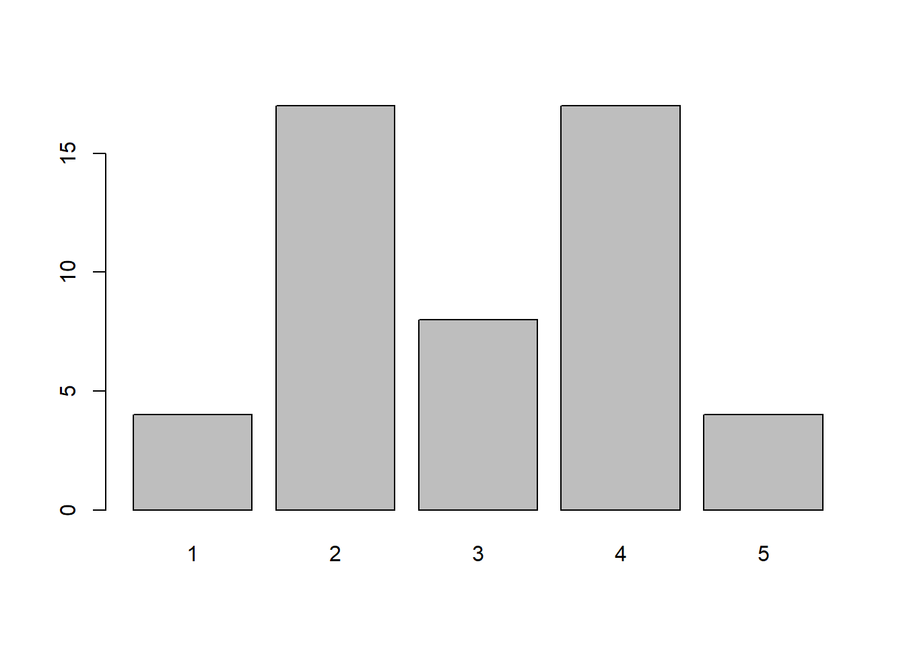
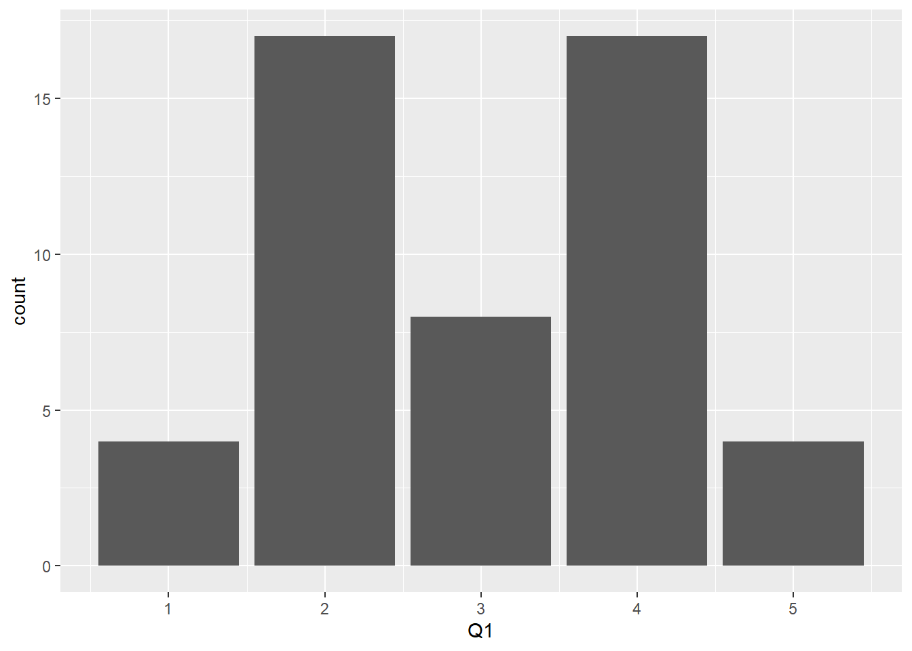
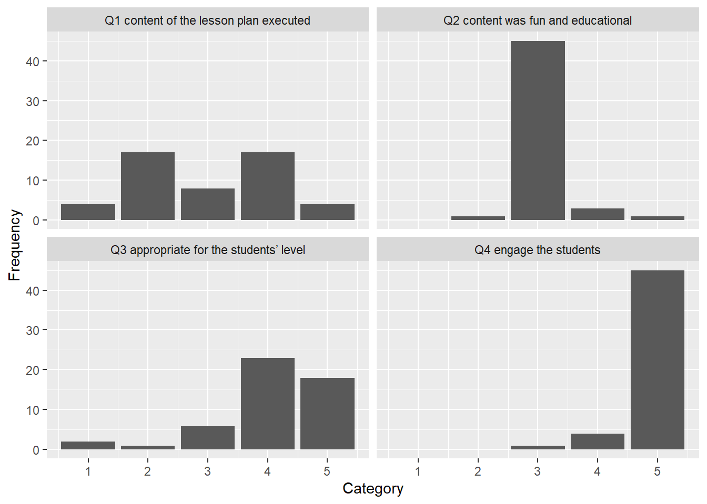
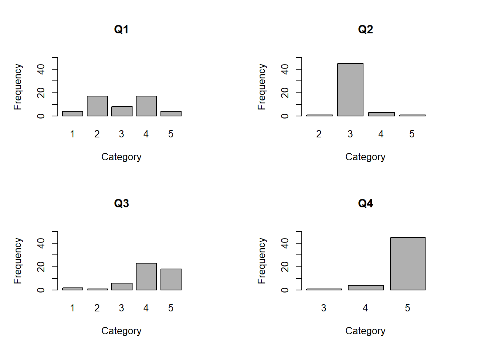

Chapter 7 Item Scoring and Item Analysis
This chapter addresses classical-test-theory approaches to item analysis. There are other ways to examine item functioning and these will be addressed later in this course when we analyze items using modern-test theory. It is a good idea to read Bandalos, Ch. 6 before or while embarking on this code.
There are three examples here. The first shows how to score raw multiple-choice data and conduct an item analysis of the resulting dichotomously scored data. It also provides an example of how to analyze distractor functioning with multiple-choice data. The second two examples use polytomous data, the first of which can be thought of as a set of partial-credit scores of some kind of performance assessment, such as from rubric-based scores of students’ essay responses. The third example is with Likert-type data, such as from a questionnaire given to teachers about their perceptions of a professional development. All of these data are contrived. Here is a list of the accompanying data sets, which are separately available in Laulima:
- Week04RawMCResponses.csv
- Week04_ItemAnalys_Poly.csv
- Week04_ItemAnalys_Likert.csv
7.1 Multiple-choice raw data and their answer key
For this first example, let’s import the raw multiple-choice data into a new R session and assign these to an object such as dat. We saw these data before in this class. These are the raw responses, not the scored responses. Using an answer key, we will score these responses as dichotomous data, then calculate total test scores from those item scores. We will also examine the functioning of the items, including their distractors.
## PID i1 i2 i3 i4 i5 i6 i7 i8 i9 i10
## 1 Eloise a c c a c d b b b d
## 2 Xena a c c b d d b c b d
## 3 MrBean a c c a c d b b c d
## 4 Rhea a c c b d d b c d d
## 5 Jean-Paul a c c a c d b a b c
## 6 Spock a c a b d d b b b b## PID i1 i2 i3 i4 i5 i6 i7 i8 i9 i10
## 11 Sachiko a c c a a b d b c c
## 12 Chloe a d c a d c d b a c
## 13 Kirk a b b a d a b d c a
## 14 Lloyd Christmas b c d b d a d b a c
## 15 Hulk c b c c d b d c d a
## 16 Donald J. a b a d d b d a a a## 'data.frame': 16 obs. of 11 variables:
## $ PID: chr "Eloise" "Xena" "MrBean" "Rhea" ...
## $ i1 : chr "a" "a" "a" "a" ...
## $ i2 : chr "c" "c" "c" "c" ...
## $ i3 : chr "c" "c" "c" "c" ...
## $ i4 : chr "a" "b" "a" "b" ...
## $ i5 : chr "c" "d" "c" "d" ...
## $ i6 : chr "d" "d" "d" "d" ...
## $ i7 : chr "b" "b" "b" "b" ...
## $ i8 : chr "b" "c" "b" "c" ...
## $ i9 : chr "b" "b" "c" "d" ...
## $ i10: chr "d" "d" "d" "d" ...We can see that all of the variables are in character format, which is what we expect.35
Let’s assign the item names to an object. Also, let’s assign the answer key to an object. These two vectors should be the same length.
items <- c("i1", "i2", "i3", "i4", "i5", "i6", "i7", "i8", "i9", "i10")
key <- c( "a", "c", "c", "a", "d", "d", "b", "b", "b", "d")Because our items are named with “i” followed by a series (1 to 10)36, we could also use a shortcut for the list of item names, using the paste0() function:37
Let’s bring the CTT package (Willse, 2018) into our working library. As with any package, if this is the first time you’re using this package, you might first have to install it using install.packages("CTT").
Take a look at the help files for the package:
In the resulting help directory, read the descriptions of the three functions we’ll use: score(), itemAnalysis(), and distractorAnalysis().
7.2 Scoring the responses
Let’s use the answer key and the score() function to score the items. Read the help file for this function to see what the arguments are and what other argument options are available.
## $score
## P1 P2 P3 P4 P5 P6 P7 P8 P9 P10 P11 P12 P13 P14 P15 P16
## 9 8 8 7 7 7 6 6 5 5 5 5 4 3 2 2
##
## $scored
## i1 i2 i3 i4 i5 i6 i7 i8 i9 i10
## Eloise 1 1 1 1 0 1 1 1 1 1
## Xena 1 1 1 0 1 1 1 0 1 1
## MrBean 1 1 1 1 0 1 1 1 0 1
## Rhea 1 1 1 0 1 1 1 0 0 1
## Jean-Paul 1 1 1 1 0 1 1 0 1 0
## Spock 1 1 0 0 1 1 1 1 1 0
## Frodo 1 1 1 1 0 1 0 1 0 0
## Shahab 1 1 0 1 1 0 0 0 1 1
## Kan 0 1 0 1 0 1 1 0 1 0
## Jayla 1 1 1 1 0 1 0 0 0 0
## Sachiko 1 1 1 1 0 0 0 1 0 0
## Chloe 1 0 1 1 1 0 0 1 0 0
## Kirk 1 0 0 1 1 0 1 0 0 0
## Lloyd Christmas 0 1 0 0 1 0 0 1 0 0
## Hulk 0 0 1 0 1 0 0 0 0 0
## Donald J. 1 0 0 0 1 0 0 0 0 0There are two things in this outputted object:
- a vector of the total scores, which is in the order of the examinees, and
- the matrix of scored responses.
These are in two different objects within the sc.out object we created. So far in R, we’ve only addressed data frames (and secretly matrices). R includes a format of objects called lists. These lists can include smaller lists. In this case, we have two objects, score and scored, inside the sc.out list.38 To isolate one, we use the $. For example, to get only the score portion (the total scores), we use this code:
## P1 P2 P3 P4 P5 P6 P7 P8 P9 P10 P11 P12 P13 P14 P15 P16
## 9 8 8 7 7 7 6 6 5 5 5 5 4 3 2 2To get the scored portion (the matrix of item scores), we use a similar code:
## i1 i2 i3 i4 i5 i6 i7 i8 i9 i10
## Eloise 1 1 1 1 0 1 1 1 1 1
## Xena 1 1 1 0 1 1 1 0 1 1
## MrBean 1 1 1 1 0 1 1 1 0 1
## Rhea 1 1 1 0 1 1 1 0 0 1
## Jean-Paul 1 1 1 1 0 1 1 0 1 0
## Spock 1 1 0 0 1 1 1 1 1 0
## Frodo 1 1 1 1 0 1 0 1 0 0
## Shahab 1 1 0 1 1 0 0 0 1 1
## Kan 0 1 0 1 0 1 1 0 1 0
## Jayla 1 1 1 1 0 1 0 0 0 0
## Sachiko 1 1 1 1 0 0 0 1 0 0
## Chloe 1 0 1 1 1 0 0 1 0 0
## Kirk 1 0 0 1 1 0 1 0 0 0
## Lloyd Christmas 0 1 0 0 1 0 0 1 0 0
## Hulk 0 0 1 0 1 0 0 0 0 0
## Donald J. 1 0 0 0 1 0 0 0 0 0This sc.out$scored object is not formatted as a data frame. It is in a matrix format.39 Let’s turn it into a data frame using the as.data.frame() function.
Because it is a data frame, we can attach the vector of the total scores to that data frame:40
Let’s take a look at our data frame:
## i1 i2 i3 i4 i5 i6 i7 i8 i9 i10 tot
## Eloise 1 1 1 1 0 1 1 1 1 1 9
## Xena 1 1 1 0 1 1 1 0 1 1 8
## MrBean 1 1 1 1 0 1 1 1 0 1 8
## Rhea 1 1 1 0 1 1 1 0 0 1 7
## Jean-Paul 1 1 1 1 0 1 1 0 1 0 7
## Spock 1 1 0 0 1 1 1 1 1 0 7
## Frodo 1 1 1 1 0 1 0 1 0 0 6
## Shahab 1 1 0 1 1 0 0 0 1 1 6
## Kan 0 1 0 1 0 1 1 0 1 0 5
## Jayla 1 1 1 1 0 1 0 0 0 0 5
## Sachiko 1 1 1 1 0 0 0 1 0 0 5
## Chloe 1 0 1 1 1 0 0 1 0 0 5
## Kirk 1 0 0 1 1 0 1 0 0 0 4
## Lloyd Christmas 0 1 0 0 1 0 0 1 0 0 3
## Hulk 0 0 1 0 1 0 0 0 0 0 2
## Donald J. 1 0 0 0 1 0 0 0 0 0 2We can save this to a CSV file for our subsequent use, such as copying and pasting into a table in a Word document:
7.3 Item analysis with dichotomous data
Let’s conduct an item analysis using, well, the itemAnalysis() function. Look at the help documentation to see the available arguments and examples beyond those presented here. Here, we’re using the scored data that we just calculated and saved to the data frame sc.
##
## Number of Items
## 10
##
## Number of Examinees
## 16
##
## Coefficient Alpha
## 0.506Hm. That is sparse. In the help files, the author (John Willse) says to use the str() function on the output. Let’s do that:
## List of 6
## $ nItem : int 10
## $ nPerson : int 16
## $ alpha : num 0.506
## $ scaleMean : num 5.56
## $ scaleSD : num 2.1
## $ itemReport:'data.frame': 10 obs. of 5 variables:
## ..$ itemName : chr [1:10] "i1" "i2" "i3" "i4" ...
## ..$ itemMean : num [1:10] 0.812 0.75 0.625 0.625 0.562 ...
## ..$ pBis : num [1:10] 0.3671 0.5081 0.1796 0.0413 -0.5565 ...
## ..$ bis : num [1:10] 0.5323 0.6923 0.2294 0.0528 -0.7006 ...
## ..$ alphaIfDeleted: num [1:10] 0.44 0.39 0.489 0.531 0.686 ...
## - attr(*, "class")= chr "itemAnalysis"Our object is a list containing six smaller objects. We see the number of items, number of observations (nPerson), coefficient alpha (for comparing alphaIfDeleted), the mean of the total score, and the standard deviation (with the default n-1 denominator) of the total score, as well as an item report. This last one, itan$itanReport is what we want to examine and report.
## itemName itemMean pBis bis alphaIfDeleted
## 1 i1 0.8125 0.367058490 0.53227823 0.4397727
## 2 i2 0.7500 0.508092301 0.69234311 0.3903346
## 3 i3 0.6250 0.179644728 0.22935449 0.4890231
## 4 i4 0.6250 0.041344912 0.05278552 0.5307692
## 5 i5 0.5625 -0.556522581 -0.70064283 0.6859756
## 6 i6 0.5625 0.594430093 0.74836709 0.3423913
## 7 i7 0.5000 0.464582098 0.58226731 0.3908046
## 8 i8 0.4375 0.008016435 0.01009242 0.5420040
## 9 i9 0.3750 0.347646609 0.44384442 0.4344458
## 10 i10 0.3125 0.520097037 0.68094599 0.3788265For each item, we get the item mean, which is the p-value with dichotomous data, the point-biserial and biserial correlations for examining item discrimination, and the alpha if deleted. The point-biserial and biserial correlations are corrected; that is, each item’s correlation is between the item and the corrected total score. The corrected total score excludes that particular item (because otherwise the correlation would be inflated).
Based on these correlations, do you notice any items in need of closer inspection? How about with the alpha-if-deleted column? Compared to our alpha of 0.51 from the itan$alpha object, can we identify any items in need of closer inspection?
Let’s format our output and save it as a csv file so we can use it in a report:41
## itemName itemMean pBis bis alphaIfDeleted
## 1 i1 0.81 0.37 0.53 0.44
## 2 i2 0.75 0.51 0.69 0.39
## 3 i3 0.62 0.18 0.23 0.49
## 4 i4 0.62 0.04 0.05 0.53
## 5 i5 0.56 -0.56 -0.70 0.69
## 6 i6 0.56 0.59 0.75 0.34
## 7 i7 0.50 0.46 0.58 0.39
## 8 i8 0.44 0.01 0.01 0.54
## 9 i9 0.38 0.35 0.44 0.43
## 10 i10 0.31 0.52 0.68 0.387.4 Distractor analysis
We can examine the functioning of the keyed response and the distractors using the distractorAnalysis() function. The help documentation provides a good explanation about the arguments.
For the discrimination index (the d-index), we can specify how the groups will be defined. The minimum number of groups in this function is 3.
## $i1
## correct key n rspP pbis discrim lower mid66 upper
## a * a 13 0.81 0.37 0.38 0.62 1 1
## b b 2 0.12 -0.43 -0.25 0.25 0 0
## c c 1 0.06 -0.54 -0.12 0.12 0 0
## d d 0 0.00 NA 0.00 0.00 0 0
##
## $i2
## correct key n rspP pbis discrim lower mid66 upper
## a a 0 0.00 NA 0.00 0.00 0 0
## b b 3 0.19 -0.77 -0.38 0.38 0 0
## c * c 12 0.75 0.51 0.50 0.50 1 1
## d d 1 0.06 -0.19 -0.12 0.12 0 0
##
## $i3
## correct key n rspP pbis discrim lower mid66 upper
## a a 4 0.25 -0.35 -0.25 0.25 0.4 0
## b b 1 0.06 -0.31 -0.12 0.12 0.0 0
## c * c 10 0.62 0.18 0.50 0.50 0.6 1
## d d 1 0.06 -0.43 -0.12 0.12 0.0 0
##
## $i4
## correct key n rspP pbis discrim lower mid66 upper
## a * a 10 0.62 0.04 0.04 0.62 0.6 0.67
## b b 4 0.25 -0.02 0.21 0.12 0.4 0.33
## c c 1 0.06 -0.54 -0.12 0.12 0.0 0.00
## d d 1 0.06 -0.54 -0.12 0.12 0.0 0.00
##
## $i5
## correct key n rspP pbis discrim lower mid66 upper
## a a 1 0.06 -0.19 -0.12 0.12 0.0 0.00
## b b 1 0.06 -0.19 -0.12 0.12 0.0 0.00
## c c 5 0.31 0.27 0.54 0.12 0.4 0.67
## d * d 9 0.56 -0.56 -0.29 0.62 0.6 0.33
##
## $i6
## correct key n rspP pbis discrim lower mid66 upper
## a a 2 0.12 -0.51 -0.25 0.25 0.0 0
## b b 3 0.19 -0.71 -0.38 0.38 0.0 0
## c c 2 0.12 -0.17 -0.12 0.12 0.2 0
## d * d 9 0.56 0.59 0.75 0.25 0.8 1
##
## $i7
## correct key n rspP pbis discrim lower mid66 upper
## a a 0 0.0 NA 0.00 0.00 0.0 0
## b * b 8 0.5 0.46 0.75 0.25 0.6 1
## c c 0 0.0 NA 0.00 0.00 0.0 0
## d d 8 0.5 -0.76 -0.75 0.75 0.4 0
##
## $i8
## correct key n rspP pbis discrim lower mid66 upper
## a a 3 0.19 -0.38 -0.25 0.25 0.2 0.00
## b * b 7 0.44 0.01 0.29 0.38 0.4 0.67
## c c 5 0.31 -0.21 0.08 0.25 0.4 0.33
## d d 1 0.06 -0.31 -0.12 0.12 0.0 0.00
##
## $i9
## correct key n rspP pbis discrim lower mid66 upper
## a a 4 0.25 -0.59 -0.38 0.38 0.2 0.00
## b * b 6 0.38 0.35 0.54 0.12 0.6 0.67
## c c 4 0.25 -0.23 -0.04 0.38 0.0 0.33
## d d 2 0.12 -0.35 -0.12 0.12 0.2 0.00
##
## $i10
## correct key n rspP pbis discrim lower mid66 upper
## a a 4 0.25 -0.76 -0.5 0.5 0.0 0
## b b 1 0.06 0.06 0.0 0.0 0.2 0
## c c 6 0.38 -0.37 -0.5 0.5 0.4 0
## d * d 5 0.31 0.52 1.0 0.0 0.4 1In the output, we see the keyed category marked with an asterisk, the number of responses to that category, the p-value of that category, rspP, the point-biserial and the d-index discrimination indexes, as well as the p-values in each of the groups.
Instead of ngroups, we can specify the percentile cut points of the groups.42 For instance, if we sought to use the upper and lower quartiles, we would use defineGroups=c(.25, .50, .25). If we sought to take the upper and lower 5 people, we might try this:
DistAn2 <- distractorAnalysis(dat[, items], key,
defineGroups=c(5/16, 6/16, 5/16),
digits=2)[1:4]
# This [1:4] asks for just the first four items, for demonstration.
DistAn2## $i1
## correct key n rspP pbis discrim lower mid68 upper
## a * a 13 0.81 0.37 0.38 0.62 1 1
## b b 2 0.12 -0.43 -0.25 0.25 0 0
## c c 1 0.06 -0.54 -0.12 0.12 0 0
## d d 0 0.00 NA 0.00 0.00 0 0
##
## $i2
## correct key n rspP pbis discrim lower mid68 upper
## a a 0 0.00 NA 0.00 0.00 0 0
## b b 3 0.19 -0.77 -0.38 0.38 0 0
## c * c 12 0.75 0.51 0.50 0.50 1 1
## d d 1 0.06 -0.19 -0.12 0.12 0 0
##
## $i3
## correct key n rspP pbis discrim lower mid68 upper
## a a 4 0.25 -0.35 -0.25 0.25 0.4 0
## b b 1 0.06 -0.31 -0.12 0.12 0.0 0
## c * c 10 0.62 0.18 0.50 0.50 0.6 1
## d d 1 0.06 -0.43 -0.12 0.12 0.0 0
##
## $i4
## correct key n rspP pbis discrim lower mid68 upper
## a * a 10 0.62 0.04 0.04 0.62 0.6 0.67
## b b 4 0.25 -0.02 0.21 0.12 0.4 0.33
## c c 1 0.06 -0.54 -0.12 0.12 0.0 0.00
## d d 1 0.06 -0.54 -0.12 0.12 0.0 0.00 With a small number of possible total scores, such as this one in which the total-score range is from 0 to 10, there will be tied scores (e.g., if we look at the With a small number of possible total scores, such as this one in which the total-score range is from 0 to 10, there will be tied scores (e.g., if we look at the sc data frame, we see that four people scored a 5). This function handles ties whereas we might not be so diligent if we did this by hand in our spreadsheet. In this particular case, the function ended up allocating 3 people to the high group (those who scored 8 or 9) and eight people to the low group (those who scored 5 or less) and the remaining five people in the middle group.43 |
If we sought to use the top and bottom 27%, as some psychometricians believe we should use for this index (Kelley, 1939), we can specify this:
DistAn3 <- distractorAnalysis(dat[, items], key,
defineGroups=c(.27, .46, .27),
digits=2)[1:4]
DistAn3## $i1
## correct key n rspP pbis discrim lower mid73 upper
## a * a 13 0.81 0.37 0.38 0.62 1 1
## b b 2 0.12 -0.43 -0.25 0.25 0 0
## c c 1 0.06 -0.54 -0.12 0.12 0 0
## d d 0 0.00 NA 0.00 0.00 0 0
##
## $i2
## correct key n rspP pbis discrim lower mid73 upper
## a a 0 0.00 NA 0.00 0.00 0 0
## b b 3 0.19 -0.77 -0.38 0.38 0 0
## c * c 12 0.75 0.51 0.50 0.50 1 1
## d d 1 0.06 -0.19 -0.12 0.12 0 0
##
## $i3
## correct key n rspP pbis discrim lower mid73 upper
## a a 4 0.25 -0.35 -0.25 0.25 0.4 0
## b b 1 0.06 -0.31 -0.12 0.12 0.0 0
## c * c 10 0.62 0.18 0.50 0.50 0.6 1
## d d 1 0.06 -0.43 -0.12 0.12 0.0 0
##
## $i4
## correct key n rspP pbis discrim lower mid73 upper
## a * a 10 0.62 0.04 0.04 0.62 0.6 0.67
## b b 4 0.25 -0.02 0.21 0.12 0.4 0.33
## c c 1 0.06 -0.54 -0.12 0.12 0.0 0.00
## d d 1 0.06 -0.54 -0.12 0.12 0.0 0.00As should be clear, we have to make the decision about how to define the upper and lower groups. Because D-indexes depend on how this grouping is set up, they tend to be accompanied by the biserial and point-biserial correlations when reporting on discrimination.
A useful argument of this function is we can ask for a CSV report to be saved in our working directory. This is nice because we can later use that in our write-up.
7.5 Item analysis with polytomous data
7.5.1 Partial-credit data
If we have a test with tasks or features that are scored on a partial-credit score, our data are polytomous. This might be from using a scoring rubric on an essay, for example. In the example below, the scores are from 1 to 4. We could transform those to 0 to 3 scale if we wanted a score of 0 to have meaning. Nonetheless, we often see data like these.
## PID poly1 poly2 poly3 poly4 Total
## 1 1 2 3 2 3 10
## 2 2 1 1 1 2 5
## 3 3 2 2 1 1 6
## 4 4 2 1 1 2 6
## 5 5 3 2 4 4 13
## 6 6 1 2 1 1 5
## 7 7 4 3 4 4 15
## 8 8 3 4 1 4 12
## 9 9 4 2 3 4 13
## 10 10 1 1 3 2 7We see there are four items. We can use the itemAnalysis() function from the CTT package for these types of data.
## List of 6
## $ nItem : int 4
## $ nPerson : int 10
## $ alpha : num 0.827
## $ scaleMean : num 9.2
## $ scaleSD : num 3.82
## $ itemReport:'data.frame': 4 obs. of 5 variables:
## ..$ itemName : chr [1:4] "poly1" "poly2" "poly3" "poly4"
## ..$ itemMean : num [1:4] 2.3 2.1 2.1 2.7
## ..$ pBis : num [1:4] 0.83 0.439 0.516 0.879
## ..$ bis : num [1:4] 0.9 0.476 0.591 0.98
## ..$ alphaIfDeleted: num [1:4] 0.698 0.864 0.849 0.665
## - attr(*, "class")= chr "itemAnalysis"## itemName itemMean pBis bis alphaIfDeleted
## 1 poly1 2.3 0.8296415 0.9000082 0.6981664
## 2 poly2 2.1 0.4392713 0.4758474 0.8637771
## 3 poly3 2.1 0.5155676 0.5907838 0.8491965
## 4 poly4 2.7 0.8787320 0.9795256 0.6651163This output provides the item mean, the point-polyserial and polyserial correlation indexes (though they are labeled as pBis and bis in the output)44 and the alpha-if-deleted estimates. Can you identify an item that seems to have less-than-ideal functioning?45
If we needed to report something analogous to a p-value, we would divide the item mean by the number of items:
PolyAnReport <- itanp$itemReport
PolyAnReport$item_p <- PolyAnReport$itemMean/itanp$nItem
PolyAnReport## itemName itemMean pBis bis alphaIfDeleted item_p
## 1 poly1 2.3 0.8296415 0.9000082 0.6981664 0.575
## 2 poly2 2.1 0.4392713 0.4758474 0.8637771 0.525
## 3 poly3 2.1 0.5155676 0.5907838 0.8491965 0.525
## 4 poly4 2.7 0.8787320 0.9795256 0.6651163 0.675With polytomous items, this “item_p” should not be interpreted as a probability of getting the item correct, but it is a way to represent item difficulty in this classical-test-theory approach.
7.5.2 Item functioning of Likert-type scale items
In examining the item functioning of self-report data, such as from Likert-type survey scales, we typically examine frequency distributions of each item’s category as well as the corrected polyserial correlations with the total scores and alpha-if-deleted indexes. Again, this is from a classical-test-theory perspective. Modern test theory can provide additional item-functioning information.
The following example is contrived. It consists of four five-point Likert-type scale questions. Here are the made-up item prompts and Likert-type response scales with their corresponding numeric code values:46
- How well was the content of the lesson plan executed?
- 1 = Very poorly executed, 2 = Not well executed, 3 = Adequately executed, 4 = Pretty well executed, 5 = Very well executed
- The lesson’s content was fun and educational.
- 1 = Strongly disagree, 2 = Disagree, 3 = Neither agree nor disagree, 4 = Agree, 5 = Strongly agree)
- To what extent was the activity appropriate for the students’ level?
- 1 = Not appropriate at all, 2 = Weakly appropriate, 3 = Appropriate enough, 4 = Pretty appropriate, 5 = Very appropriate)
- To what extent did the activity engage the students?
- 1 = Not at all, 2 = Minimally, 3 = Partially, 4 = Moderately, 5 = Fully)
Let’s read in the data.
## 'data.frame': 50 obs. of 5 variables:
## $ PID: int 1 2 3 4 5 6 7 8 9 10 ...
## $ Q1 : int 1 4 4 3 2 2 2 2 5 2 ...
## $ Q2 : int 2 3 3 3 3 3 3 3 5 4 ...
## $ Q3 : int 1 4 3 2 3 4 4 5 4 5 ...
## $ Q4 : int 4 5 5 5 5 5 5 5 5 5 ...Let’s make a subset of the data using the index:
We can again use the CTT package and its itemAnalysis() function to examine item functioning:
## List of 6
## $ nItem : int 4
## $ nPerson : int 50
## $ alpha : num 0.435
## $ scaleMean : num 15
## $ scaleSD : num 1.96
## $ itemReport:'data.frame': 4 obs. of 5 variables:
## ..$ itemName : chr [1:4] "Q1" "Q2" "Q3" "Q4"
## ..$ itemMean : num [1:4] 3 3.08 4.08 4.88
## ..$ pBis : num [1:4] 0.289 0.383 0.212 0.354
## ..$ bis : num [1:4] 0.308 0.611 0.241 0.603
## ..$ alphaIfDeleted: num [1:4] 0.362 0.341 0.415 0.358
## - attr(*, "class")= chr "itemAnalysis"## itemName itemMean pBis bis alphaIfDeleted
## 1 Q1 3.00 0.2891476 0.3078482 0.3618619
## 2 Q2 3.08 0.3827611 0.6110369 0.3406965
## 3 Q3 4.08 0.2120227 0.2407376 0.4149392
## 4 Q4 4.88 0.3540815 0.6033898 0.3575804The internal-consistency reliability is pretty low, with alpha = 0.43. But, it’s only four-items long. Does any particular item need to be further inspected based on these correlations and alpha-if-deleted estimates?47
Let’s try a different package to examine category-response frequencies, the questionr package (Barnier et al., 2020). In this package, there is a function called freq().48
## n % val%
## 1 4 8 8
## 2 17 34 34
## 3 8 16 16
## 4 17 34 34
## 5 4 8 8This displays four columns:
- The numeric values of the response categories, which in our data range from 1 to 5.
- The number of respondents selecting that category in this item.
- The percentage of respondents selecting that category in this item.
- The percentage of so-called “valid” data points. In other words, data that are not missing. This column should be the same as the third column if we have complete data.
We can use this function in an apply() function to each of the four items:49
## $Q1
## n % val%
## 1 4 8 8
## 2 17 34 34
## 3 8 16 16
## 4 17 34 34
## 5 4 8 8
##
## $Q2
## n % val%
## 2 1 2 2
## 3 45 90 90
## 4 3 6 6
## 5 1 2 2
##
## $Q3
## n % val%
## 1 2 4 4
## 2 1 2 2
## 3 6 12 12
## 4 23 46 46
## 5 18 36 36
##
## $Q4
## n % val%
## 3 1 2 2
## 4 4 8 8
## 5 45 90 90What do you notice about the items that have no responses on some categories? Wouldn’t it be nice to see these results instead of strain our eyes with charts? That’s next:
7.5.3 Graphing frequencies of category responses
Here, we’ll practice creating a graphic for each individual item. If we did this with each item, we will have several plots. In the subsequent section, we’ll examine them all in a single graphic by displaying each item as a panel (or a facet) in a grid, which can get complex, so if you’re feeling overwhelmed, stick with plotting the individual items one at a time.
Here’s the Base R code for creating a barplot with a single item. The table() function is described later in this chapter, but basically, it tabulates the number of responses that have that value before generating the bar plot.

We can also do this in ggplot2 using the ggplot() function. We’re using a single variable, Q1, and the geom_bar() geometric graphic.

How does this item appear to be functioning? It appears to be doing a good job of separating the lower respondents from the higher respondents, so even though it does not have a normal distribution, this is a great item in this regard.
However, before concluding it is an all-around great item, we should also consider its discrimination and alpha-if-deleted indexes, as examined above. Additionally, evidence based on the respondents’ cognitive processes, such as through cognitive interviews, should be considered (AERA et al., 2014). If respondents rely on an unrelated construct when responding to these questions, such as social desirability or acquiescence, the resulting scores will not represent what we think they represent. All of this information should be taken together in arriving at conclusions with item functioning.
7.6 Optional advanced graphics stuff
7.6.1 Creating a facet plot with GGplot2
If you want to get fancy, try creating a plot that includes all of the items. Creating a grid-type of graphic is a little difficult, but it is useful for providing professional graphics of how the items are functioning.
For ggplot, we have to create a data frame with the category as one variable and the frequency of responses to that category as another variable (sort of like what the table() function did in the Base R plot we just examined). In other words, our X and Y axes have to be columns in our data frame.
We’ll use the count() function from the plyr package (Wickham, 2020a) for getting the frequency of each category and saving it as a variable. We will start with one variable and then copy and paste this as a template to use for the remaining three items.50
Here is what the count() function does with a single variable:
## x freq
## 1 1 4
## 2 2 17
## 3 3 8
## 4 4 17
## 5 5 4We can use this to create a data frame that includes what we need in the ggplot. Let’s create a data frame and add two more variables to the data frame: The item name, which we included in the Liks object (Q1, Q2, Q3, Q4) and an item label. The ItemLab here is optional—we are including it to remind us what the question was about. We will use these ItemLab entries to title each item’s facet in the graph.
f1 <- data.frame(Item = Liks[1],
count(Likdat_sub, Liks[1]),
ItemLab = "Q1 content of the lesson plan executed")
f1## Item Q1 freq ItemLab
## 1 Q1 1 4 Q1 content of the lesson plan executed
## 2 Q1 2 17 Q1 content of the lesson plan executed
## 3 Q1 3 8 Q1 content of the lesson plan executed
## 4 Q1 4 17 Q1 content of the lesson plan executed
## 5 Q1 5 4 Q1 content of the lesson plan executedLet’s also add a proportion variable to each of these, to see the proportion of responses in each item’s category51. This is optional, but it might be useful if we wish to use percent of responses as the Y axis instead of frequency. It looks scary, but there is a numerator and a denominator. The numerator is the function from the line before but with the frequency, $freq isolated from it. So, that is the frequency of the responses in that particular category. The denominator is the number of non-missing responses to this item, which is the same number across the item’s categories. Here, we’re using the sum(!is.na()) function to perform this count.
f1 <- data.frame(Item = Liks[1],
count(Likdat_sub, Liks[1]),
Proportion = count(Likdat_sub, Liks[1])$freq / sum(!is.na(Likdat_sub[, Liks[1]])),
ItemLab = "Q1 content of the lesson plan executed")
f1## Item Q1 freq Proportion ItemLab
## 1 Q1 1 4 0.08 Q1 content of the lesson plan executed
## 2 Q1 2 17 0.34 Q1 content of the lesson plan executed
## 3 Q1 3 8 0.16 Q1 content of the lesson plan executed
## 4 Q1 4 17 0.34 Q1 content of the lesson plan executed
## 5 Q1 5 4 0.08 Q1 content of the lesson plan executedWe can copy and paste that code and use it with Items 2 through 4, changing the numbers and labels (and checking it twice).
f2 <- data.frame(Item = Liks[2],
count(Likdat_sub, Liks[2]),
Proportion = count(Likdat_sub, Liks[2])$freq / sum(!is.na(Likdat_sub[, Liks[2]])),
ItemLab = "Q2 content was fun and educational")
f3 <- data.frame(Item = Liks[3],
count(Likdat_sub, Liks[3]),
Proportion = count(Likdat_sub, Liks[3])$freq / sum(!is.na(Likdat_sub[, Liks[3]])),
ItemLab = "Q3 appropriate for the students’ level")
f4 <- data.frame(Item = Liks[4],
count(Likdat_sub, Liks[4]),
Proportion = count(Likdat_sub, Liks[4])$freq / sum(!is.na(Likdat_sub[, Liks[4]])),
ItemLab = "Q4 engage the students")So, now we have four data frames. To make a complete data frame that includes the frequency data from all of the items, we need to combine them into a single data frame. But first, we need to make sure all of these smaller data frames have exactly the same column names; otherwise, when we append these, the results will get ugly. Let’s use the names() function to see what the names are of a couple of these data frames we just created:
## [1] "Item" "Q1" "freq" "Proportion" "ItemLab"## [1] "Item" "Q3" "freq" "Proportion" "ItemLab"These do not have the same name for the second column of data. Let’s change the names of all of these so that they are the same. Actually, if we look at the column, this is the category. Let’s use “Category” as the name because we want to plot the frequency of repsponses per category per item. While we’re doing this, let’s also change the “freq” column to be “Frequency” so it shows up that way in our plot.
names(f4) <- names(f3) <- names(f2) <- names(f1) <- c("Item", "Category", "Frequency", "Proportion", "ItemLab")Notice that we used the c() function to enclose a vector of words, which we then assigned to names(x) which we repeated with the other variables, from right to left.52
Let’s see what this looks like:
## Item Category Frequency Proportion ItemLab
## 1 Q1 1 4 0.08 Q1 content of the lesson plan executed
## 2 Q1 2 17 0.34 Q1 content of the lesson plan executed
## 3 Q1 3 8 0.16 Q1 content of the lesson plan executed
## 4 Q1 4 17 0.34 Q1 content of the lesson plan executed
## 5 Q1 5 4 0.08 Q1 content of the lesson plan executedNow that these all have the same variable names, we can append the objects as rows beneath each other to make a data frame, which we can arbitrarily call freqy. We can “bind” rows using the rbind() function.
## Item Category Frequency Proportion ItemLab
## 1 Q1 1 4 0.08 Q1 content of the lesson plan executed
## 2 Q1 2 17 0.34 Q1 content of the lesson plan executed
## 3 Q1 3 8 0.16 Q1 content of the lesson plan executed
## 4 Q1 4 17 0.34 Q1 content of the lesson plan executed
## 5 Q1 5 4 0.08 Q1 content of the lesson plan executed
## 6 Q2 2 1 0.02 Q2 content was fun and educational
## 7 Q2 3 45 0.90 Q2 content was fun and educational
## 8 Q2 4 3 0.06 Q2 content was fun and educationalNow we’re ready to create the plot. If we haven’t already, let’s bring ggplot2 into our library. With this data layout—that is, with one column being the category and the other being the frequency—we use the geom_col() geom.53 For placing our items on a grid, we use the gridExtra package (Auguie, 2017). We might need to install it. From this package, we use the facet_wrap() function.54
library(ggplot2)
library(gridExtra)
ggplot(freqy, aes(x = Category, y = Frequency)) +
geom_col() +
facet_wrap(. ~ ItemLab, nrow=2, )
Can you see which items are functioning well and which are not?
7.6.2 The Base R approach to creating a facet plot
To create a facet type plot in base R, we specify the parameters of the plot to be a 2-by-2 grid, with the par(mfrow = c(2,2). We use a for loop from the first to last index in our set of names in Liks (which is a vector), which is four elements long. So the for-loop performs the barplot() function on a sequence of variables, first on the “Q1” in the data, then on “Q2” and so forth, then puts the plots into the 2-by-2 plot area:
## [1] "Q1" "Q2" "Q3" "Q4"par(mfrow = c(2, 2), ask = FALSE, mar=c(5,5,5,5))
for (i in Liks) barplot(table(Likdat_sub[ , i]),
main = i,
col = "grey69",
ylim = c(0, 50),
ylab="Frequency",
xlab="Category")
The ggplot facet-plot result is more informative than this Base R result because it included the missing categories in Q2 and Q4.
Conclusions: The Base R approach with individual items is probably the easiest to implement, though the ggplot is not that difficult. With the facet plot, the ggplot approach is nice looking and more informative, though the Base R plot has shorter code.
7.7 Additional functions for examining category frequencies
The information in this section will serve us in future R work. We learn about factors55, ordered factors, and a few new functions, data.frame(), table() and lapply().
7.7.1 Using the table() function and the lapply() function
We used the questionr package above to examine frequency counts of the categories for each item. We can also use some Base R functions. Let’s use the table() function on a single variable.
##
## 1 2 3 4 5
## 4 17 8 17 4The top row is the label of the category. The bottom row is the frequency. This is very simple, and not as informative as the output from the questionr package. It is also similar to the count() function we used from the plyr package. In any case, we could continue to do this for each item individually.
A more efficient way is to use the lapply() function. This is related to the apply() function, but instead of using the function to apply a function to rows or columns (which is what the apply() function does), lapply() uses a function on each element (each data point) in a column of our data frame. Let’s use the table function inside the lapply() function:
## $Q1
##
## 1 2 3 4 5
## 4 17 8 17 4
##
## $Q2
##
## 2 3 4 5
## 1 45 3 1
##
## $Q3
##
## 1 2 3 4 5
## 2 1 6 23 18
##
## $Q4
##
## 3 4 5
## 1 4 45Now, we have a list of lists—one for each question.
7.7.2 Specifying the data as categorical
We can use the summary() function to examine the data but because they are numeric, it will report the mean, minimum, maximumn, and quartiles.
## Q1 Q2 Q3 Q4
## Min. :1 Min. :2.00 Min. :1.00 Min. :3.00
## 1st Qu.:2 1st Qu.:3.00 1st Qu.:4.00 1st Qu.:5.00
## Median :3 Median :3.00 Median :4.00 Median :5.00
## Mean :3 Mean :3.08 Mean :4.08 Mean :4.88
## 3rd Qu.:4 3rd Qu.:3.00 3rd Qu.:5.00 3rd Qu.:5.00
## Max. :5 Max. :5.00 Max. :5.00 Max. :5.00We can change the type of these data to be factors. R will treat factors in a different way than numeric data. Factors are categorical data, or on a nominal level scale of measurement. For this, we can use the factor() function. Here’s how we do it with a single variable, Q1 in this case:56
## Factor w/ 5 levels "1","2","3","4",..: 1 4 4 3 2 2 2 2 5 2 ...This is now a factor, not an integer type of data. Now if we use the summary() function on this variable, the results will be frequency counts:
## 1 2 3 4 5
## 4 17 8 17 4These results are the same as from the table() function.
If we want to create factors with several items, we can do this with each variable. A more efficient way is to use the lapply() function with the factor() function, just as we did with the table() function above:
## List of 4
## $ Q1: Factor w/ 5 levels "1","2","3","4",..: 1 4 4 3 2 2 2 2 5 2 ...
## $ Q2: Factor w/ 4 levels "2","3","4","5": 1 2 2 2 2 2 2 2 4 3 ...
## $ Q3: Factor w/ 5 levels "1","2","3","4",..: 1 4 3 2 3 4 4 5 4 5 ...
## $ Q4: Factor w/ 3 levels "3","4","5": 2 3 3 3 3 3 3 3 3 3 ...Let’s try using the summary() function on our new object:
## Length Class Mode
## Q1 50 factor numeric
## Q2 50 factor numeric
## Q3 50 factor numeric
## Q4 50 factor numericHm. This is not the result we expect. The reason is that our object is a list. We need to turn it into a data frame. To do this, let’s use the data.frame() function:
## Q1 Q2 Q3 Q4
## 1: 4 2: 1 1: 2 3: 1
## 2:17 3:45 2: 1 4: 4
## 3: 8 4: 3 3: 6 5:45
## 4:17 5: 1 4:23
## 5: 4 5:18That’s better. Looking at the structure of our data frame, we see these are indeed factors. Some have five levels; others have fewer:
## 'data.frame': 50 obs. of 4 variables:
## $ Q1: Factor w/ 5 levels "1","2","3","4",..: 1 4 4 3 2 2 2 2 5 2 ...
## $ Q2: Factor w/ 4 levels "2","3","4","5": 1 2 2 2 2 2 2 2 4 3 ...
## $ Q3: Factor w/ 5 levels "1","2","3","4",..: 1 4 3 2 3 4 4 5 4 5 ...
## $ Q4: Factor w/ 3 levels "3","4","5": 2 3 3 3 3 3 3 3 3 3 ...These data are no longer numbers (we cannot use mathematical operations on them). Instead, they are nominal-level data with numbers used as their labels. We could replace the labels with text, such as c("SD", "D", "N", "A", "SA") for example if we sought to display our levels from “Strongly disagree” to “Strongly agree”.
7.7.3 Ordered factors
We can also create ordered factors, which are ordered categorical data. These are on an ordinal level scale of measurement. For examining frequency counts, the results are no different from simply treating them as nomimal level factors, but while we’re talking about factors, we might as well talk about ordered factors. Here’s the code for a single variable:
## Ord.factor w/ 5 levels "1"<"2"<"3"<"4"<..: 1 4 4 3 2 2 2 2 5 2 ...A shorter version of this is with the ordered() function:
## Ord.factor w/ 5 levels "1"<"2"<"3"<"4"<..: 1 4 4 3 2 2 2 2 5 2 ...Looking at the structure of the object, we see it is an ordered factor with five levels. The “1” is ordered lower than the “2”, which is lower than the “3”, and so forth.
If we want to create factors with several items, we can use the lapply() function with the ordered() function, just as we did above. Let’s also turn this into a data frame in the same step by enclosing the lapply() function in a data.frame() function:
## 'data.frame': 50 obs. of 4 variables:
## $ Q1: Ord.factor w/ 5 levels "1"<"2"<"3"<"4"<..: 1 4 4 3 2 2 2 2 5 2 ...
## $ Q2: Ord.factor w/ 4 levels "2"<"3"<"4"<"5": 1 2 2 2 2 2 2 2 4 3 ...
## $ Q3: Ord.factor w/ 5 levels "1"<"2"<"3"<"4"<..: 1 4 3 2 3 4 4 5 4 5 ...
## $ Q4: Ord.factor w/ 3 levels "3"<"4"<"5": 2 3 3 3 3 3 3 3 3 3 ...We can use the summary() function with these ordered-categorical data and see the same result as if they were nominal:
## Q1 Q2 Q3 Q4
## 1: 4 2: 1 1: 2 3: 1
## 2:17 3:45 2: 1 4: 4
## 3: 8 4: 3 3: 6 5:45
## 4:17 5: 1 4:23
## 5: 4 5:18This section introduced factors and ordered factors in R. These are how R understands categorical and ordered-categorical data, which correspond with nominal and ordinal levels of measurement. Although there was no difference in our results with the summary() function when our data are factors and ordered factors, these types of data do make a difference in other R functions that we will encounter.
7.8 Conclusion
The examples provided in this chapter show how we can use R to perform some of the procedures needed for collecting quantitative evidence of item functioning. These procedures are consistent with classical test theory but can also accompany more advanced procedures that are used in modern-test-theory analyses.
It is important to recognize that any single source of evidence is likely insufficient. For instance, we may have a distribution of frequencies for a Likert-type item’s categories that shows that the item is successfully separating respondents into low and high groups on that item; however, we must also examine whether that item is indeed measuring the construct we intend it to measure. For this, we might assume that the other items in our instrument measure this same construct. If we observe good discrimination and alpha-if-deleted indexes, we’re in good shape. These are, of course, related: If a frequency distribution reveals that only one category in an item is being used, the discrimination indexes will be 0 and the alpha-if-deleted index will be poor for that item. To gather further evidence that our items measure this construct, we can also collect evidence about the response processes with these items. Those types of data are more qualitative in nature and are typically collected through cognitive interviews (for an example, see Harrison, 2020).
Finally, we must also recognize that our item-analysis results are specific to the sample of examinees or respondents in the study. The item-analysis results obtained with small samples should be interpreted with caution. By chance, a random sample of examinees will differ from another random sample, which means we will likely observe different item-functioning results and therefore arrive at different conclusions about which items need to be revised. Our examples in this chapter were contrived and included 16 or fewer respondents, which is probably too few. Larger samples of the population with whom the instrument will be used will provide more stable results for drawing item-functioning conclusions.57
References
AERA, APA, & NCME. (2014). Standards for educational and psychological testing. American Educational Research Association.
Auguie, B. (2017). GridExtra: Miscellaneous functions for "grid" graphics. https://CRAN.R-project.org/package=gridExtra
Barnier, J., Briatte, F., & Larmarange, J. (2020). Questionr: Functions to make surveys processing easier. https://juba.github.io/questionr/
Harrison, G. M. (2020). Validity evidence against the children’s New Ecological Paradigm Scale. The Journal of Environmental Education, 51(1), 1–13. https://doi.org/10.1080/00958964.2019.1646202
Kelley, T. L. (1939). The selection of upper and lower groups for the validation of test items. Journal of Educational Psychology, 30(1), 17–24.
Wickham, H. (2020a). Plyr: Tools for splitting, applying and combining data. https://CRAN.R-project.org/package=plyr
Willse, J. T. (2018). CTT: Classical test theory functions. https://CRAN.R-project.org/package=CTT
If the items are formatted as factors, use the
stringsAsFactors = FALSEargument in theread.csvfunction. For example,dat <- read.csv("Week04RawMCResponses.csv", stringsAsFactors = FALSE).↩︎The code
1:10returns the integers from 1 to 10. This also works for letters; for example, if we have the first 10 letters in the alphabet, we can useletters[1:10].↩︎Another option to reduce typing fatigue is to use the
dput()function on the names of the data frame, and then copy and paste that result from the console to ourc()function initems <- c("i1", "i2", "i3", "i4", "i5", "i6", "i7", "i8", "i9", "i10").↩︎We can examine the structure of this object using
str(sc.out).↩︎We actually saw matrices before when we examined the output from the
cor()andcov()functions.↩︎Unlike with objects in matrix format, with objects in data-frame format, we can append variables.↩︎
In the code, we are pulling out the item names (the first column), then rounding the numeric data in the report (columns 2:5) to two decimal places. Then, we putting them back together into a data frame. This is only for aesthetics in reporting the item analysis. If we wished to perform operations on these data, we would not round them.↩︎
These must sum to 1. Fractions seem to work, too, such as
c(1/3, 1/3, 1/3).↩︎We can see these numbers if we use the
pTable = FALSEargument in the function. For this reason, the results here will differ from those in our spreadsheet.↩︎Like the biserial correlations from this function, these polyserial-type correlations are corrected to exclude the item from the total score. The
CTTpackage also has apolyserial()function, which, if we correct the total score to exclude that item, will provide the same result with polytomous data as that listed in the output under thebiscolumn (if theml = FALSEoption is used inpolyserial()or if therBisML=TRUEis used in theItemAnalysis()function). Thispolyserial()function is useful if we seek to estimate the polyserial correlations of the items with an external variable that is hypothesized to measure the construct.↩︎With a test with such a small number of items, we should be careful in making decisions to eliminate items, particularly if a less-than-ideal item is specified to measure a part of the content domain that is deemed to be important for the inferences we draw from these scores. For example, if the second item were measuring thinking and communication skills, that might be pretty important for our proposed scoring inferences. Instead of removing this item, we might look at the scoring rubric and the task and determine if it is functioning as we expect. To further emphasize the point, we often seek heterogeneity in our test tasks to gather information across the scope of the construct. This likely results in lower reliability than if all of the tasks were measuring something very homogeneous (Loevinger, 1954).↩︎
Question 2 is intentionally written to be a poor item. It is double-barreled; it also uses an agreement scale even though the construct in the prompt is not about agreement, which is a practice some survey-research scholars caution against (Krosnick & Presser, 2010; Saris et al., 2010).↩︎
When developing instruments, we should take an iterative approach. If we eliminate or change a specific item, the other items’ biserial & point-biserial correlations (or their analogues with polytomous data—polyserial & point-polyserial correlations) and alpha-if-deleted will also change.↩︎
We are using the double colon,
::inquestionr::freq()to ensure that thefreq()function is from this package. Sometimes with short function names such as this, packages might share the same function names, so this is a safeguard from getting an error.↩︎Here, the
apply()function is to margin 2, which is to apply it to each column, examining across the rows in that column.↩︎There are more elegant ways to do this. We could, for example, use a custom functino or a for-loop to do this work, particularly if there are many items.↩︎
We could multiply by 100 for percents.↩︎
When we assign names to an existing data frame using this approach, we need to be sure the number of new names is the same as the number of columns. Another way is to use the
rename()function in theplyrpackage. We could also use indexing, such asnames(f1)[c(2,3)] <- c("Category", "Frequency"), which assigns the two words to the second and third names of this data frame,f1.↩︎This contrasts with the
geom_bar()geom, which we used before with a single item and which only required a single column of data. In other words,geom_bar()automatically counted the number of responses in each category whereasgeom_col()uses both anxandyin its aesthetics.↩︎The
. ~ ItemLabtells thefacet_wrap()function to take the plotting data and create facets using theItemLabvariable. We could replace this with theItemvariable in our data frame if we wanted the facets to be labeled asQ1,Q2, and so forth.↩︎This is not factor analysis; just a type of variable.↩︎
We can use
_Fin the object name to remind us it is a factor, compared to the original object.↩︎Ideally, we would use systematic sampling procedures, such as simple-random sampling, to represent the population who will eventually be given the instrument.↩︎